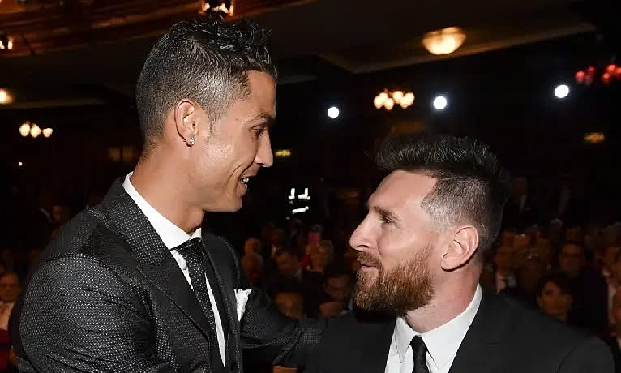
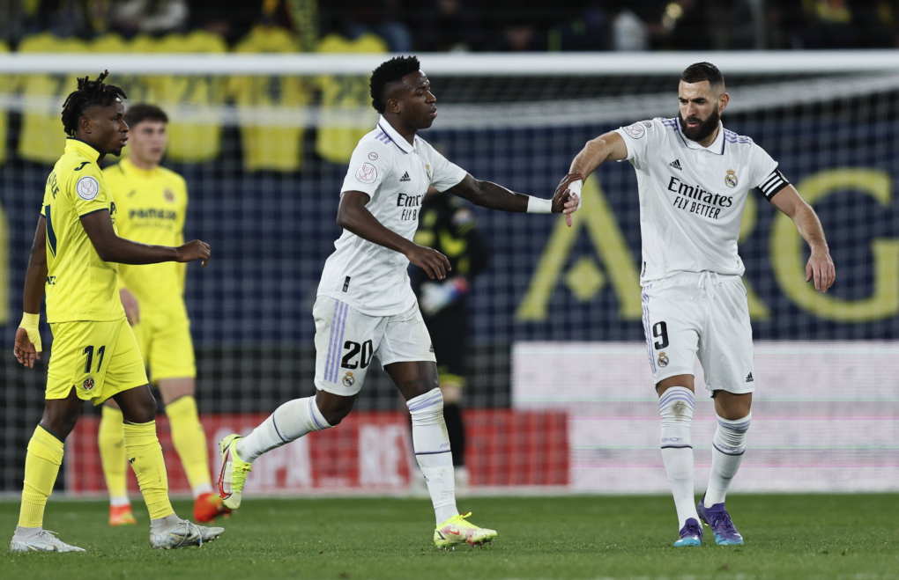
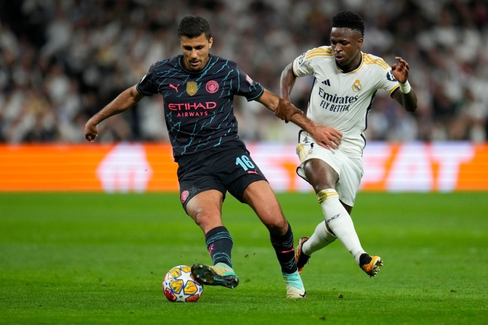

Messi, Ronaldo không được đề cử Quả Bóng Vàng 2024
Lần đầu tiên kể từ năm 2003, cả Lionel Messi lẫn Cristiano Ronaldo đều không có tên trong danh sách 30 cầu thủ được đề cử Quả Bóng Vàng.
Sáng sớm 5/9 theo giờ Hà Nội, tạp chí France Football công bố các đề cử cho những hạng mục giải thưởng của Quả Bóng Vàng. Trong đó, Quả Bóng Vàng nam được công bố sau cùng, với 30 cầu thủ, như Vinicius Junior, Kylian Mbappe, Rodri, Jude Bellingham hay Lamine Yamal.
Lần gần nhất danh sách đề cử không có Ronaldo hay Messi là năm 2003, lúc tiền đạo Bồ Đào Nha vừa chuyển sang Man Utd còn tài năng Argentina vẫn chưa ra mắt đội một Barca. Năm 2004, Ronaldo lần đầu được đề cử Quả Bóng Vàng, đứng đồng vị trí 12 chung cuộc với Milan Baros, mở ra chuỗi 19 năm liên tiếp đề cử có tên anh hoặc Messi.
Ronaldo vẫn đang giữ kỷ lục 18 lần được đề cử Quả Bóng Vàng, còn Messi cũng 16 lần xuất hiện trong danh sách này. Năm ngoái 2023, Ronaldo lần đầu không được đề cử sau 20 năm, còn Messi đoạt Quả Bóng Vàng , theo sau là Bóng Bạc Erling Haaland và Bóng Đồng Kylian Mbappe.

Hai siêu sao bóng đá vắng mặt ở Quả Bóng Vàng cũng không phải bất ngờ, vì họ đều không còn chơi ở châu Âu. Cả 30 cầu thủ đề cử Quả Bóng Vàng 2024 đều đang chơi cho một CLB thuộc năm giải VĐQG hàng đầu châu Âu. Ronaldo đã 39 tuổi, không ghi bàn nào tại Euro 2024, còn Messi 37 tuổi, cũng không quá nổi bật khi Argentina vô địch Copa America.
Có một cầu thủ là đồng đội của Ronaldo được đề cử, là tiền vệ Bồ Đào Nha Vitinha, đang khoác áo PSG. Trong khi, Messi có hai đồng đội trong danh sách này, là thủ môn Emiliano Martinez và tiền đạo Lautaro Martinez, đều của Argentina.
Tiêu chí bình chọn giải vẫn theo ba yếu tố, gồm màn trình diễn cá nhân, thành tích tập thể trong mùa 2023-2024 và đẳng cấp. Theo các nhà cái, Vinicius và Rodri đang có nhiều cơ hội hơn cả để đoạt Quả Bóng Vàng, với tỷ lệ của tiền đạo Brazil cao gấp đôi tiền vệ Tây Ban Nha. Nếu giành giải, Rodri sẽ là cầu thủ Ngoại hạng Anh đầu tiên đoạt Quả Bóng Vàng kể từ Ronaldo năm 2008 cùng Man Utd.
Với Quả Bóng Vàng nam, mỗi nhà báo từ một nước có đội tuyển thuộc Top 100 FIFA sẽ được lựa chọn để tạo thành hội đồng chấm điểm cho 30 đề cử. Mỗi nhà báo sẽ chọn ra năm cầu thủ, với số điểm lần lượt là 6, 4, 3, 2 và 1. Cầu thủ nhận được tổng điểm cao nhất sẽ đoạt Bóng Vàng.
Ở các hạng mục khác, bất ngờ lớn nhất có lẽ là thủ môn Ronwen Williams được đề cử giải Yashin, dù đang chơi bóng tại Nam Phi. HLV Xabi Alonso có nhiều cơ hội thắng giải khi giúp Bayer Leverkusen vô địch Bundesliga bất bại. Còn ở giải cầu thủ trẻ nam, Yamal gần như chắc chắn được vinh danh.
Lễ trao Quả Bóng Vàng 2024 sẽ diễn ra ngày 28/10/2024 tại nhà hát Chatelet ở Paris, Pháp. Messi đang giữ kỷ lục giành tám Bóng Vàng, còn Ronaldo đứng thứ hai với năm giải. Chưa có cầu thủ nào sau thế hệ 8x đoạt giải thưởng này.
Danh sách đề cử một số hạng mục
Quả Bóng Vàng nam : Antonio Rudiger, Kylian Mbappe, Lautaro Martinez, Ademola Lookman, Alejandro Grimaldo, Dani Carvajal, William Saliba, Lamine Yamal, Bukayo Saka, Hakan Calhanoglu, Rodri, Declan Rice, Harry Kane, Cole Palmer, Vitinha, Vinicius Jr, Martin Odegaard, Dani Olmo, Florian Wirtz, Mats Hummels, Erling Haaland, Nicolas Williams, Granit Xhaka, Artem Dovbik, Toni Kroos,Jude Bellingham, Phil Foden, Ruben Dias, Federico Valverde, Emiliano Martinez.
HLV nam : Carlo Ancelotti, Xabi Alonso, Luis de la Fuente, Gian Piero Gasperini, Pep Guardiola, Lionel Scaloni.
Thủ môn nam : Diogo Costa, Gianluigi Donnarumma, Gregor Kobel, Andriy Lunin, Mike Maignan, Giorgi Mamardachvili, Emiliano Martinez, Unai Simon, Yann Sommer, Ronwen Williams.
Cầu thủ trẻ nam : Pau Cubarsi, Alejandro Garnacho, Arda Guler, Karim Konate, Kobbie Mainoo, Joao Neves, Savinho, Mathys Tel, Lamine Yamal, Warren Zaire-Emery.